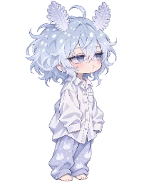

Android & iOS
- Download the add-on and open the .mcaddon file with Minecraft.
- Edit a Bedrock world and activate Mizuki under Behavior Packs. Confirm Mizuki also appears under Resource Packs.
- Launch the world and check the hotbar in Survival.
MINECRAFT BEDROCK
A Dawn-inspired HUD with live companion and navigation readouts, matching container screens and a twilight main menu.
Download add-on
In-game, use the Snowdrop Whistle and select HUD · Change mode to cycle the readouts. Companion mode is the default for players who have never chosen a HUD setting. Companion mode shows activity, health and distance. Navigation mode shows your heading and XYZ coordinates. Choose Change Appearance to switch companions. The active companion palette automatically colours the readout accents. Bed guidance takes priority when active.
Mobile and Windows: After import, go to Settings → Global Resources → My Packs and activate Chibi Companions — Mizuki Resources. Return to the main menu to see the theme. The world still needs the behavior pack for companions.
Nintendo Switch: Realms can apply the pack inside the Realm. The Switch main menu requires a global pack, which the Realm does not install.
Eight palettes recolour the hotbar, health hearts, XP bar and container screens. Amethyst is the default. The preview below shows Amethyst.
SETUP
After activating Mizuki Resources, select its gear icon and choose a palette to match the HUD theme listed in the Snowdrop Whistle menu. Reopen the world to apply it. The companion readouts still follow the skin automatically.
The package passed its automated checks. The themed screens still need an in-game check on the target devices. Minecraft’s add-on guide